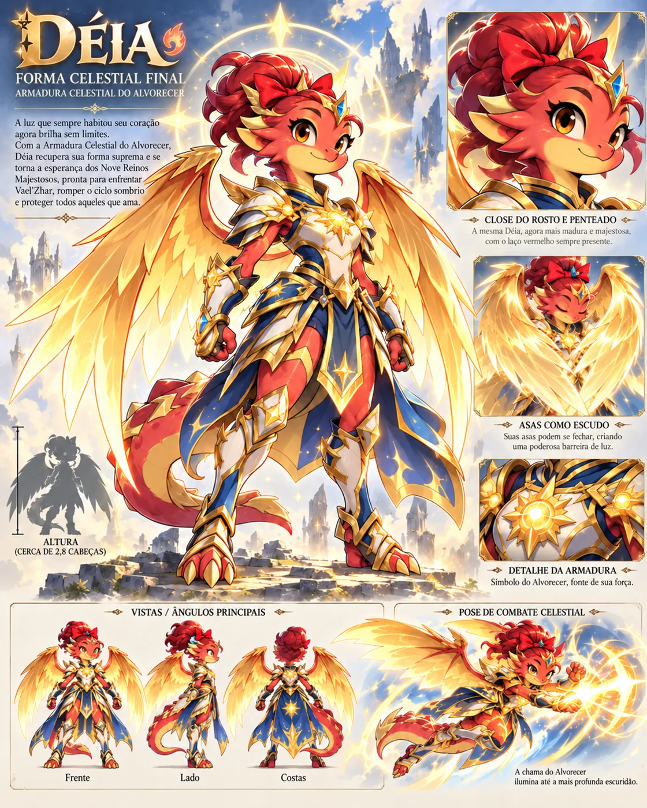
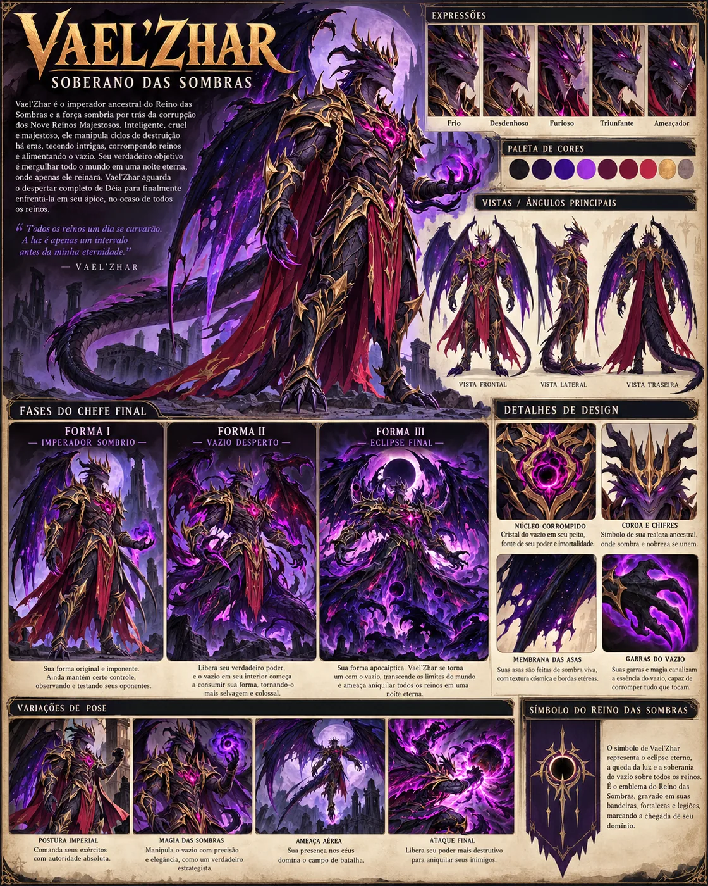

Herdeira do Primeiro Alvorecer
Déia
Pequena dragonesa coral-avermelhada, barriga amarela, olhos âmbar, coque e fita vermelha; renasce de ovo cósmico, amadurece fisicamente e emocionalmente até adulta, mas mantém alegria, apetite, humor e autonomia.
Déia nasceu de um ovo celestial, cresceu sob o amor de Vovó Brasa e agora atravessa nove reinos para compreender seu passado e cumprir uma promessa que pode transformar o destino de todos.
Universo e artes de referência do projeto • Em desenvolvimento
Da Primeira Aurora ao Reino das Sombras — relato organizado da Bíblia V6.3.
Uma consciência anterior às fronteiras dos nove mundos, chamada Primeiro Alvorecer, guarda a possibilidade de renovação da vida. Não determina o livre-arbítrio da futura herdeira. O Reino do Crepúsculo, independente e povoado por guerreiros guardiões, envia defensores a outros mundos ameaçados. A Guerra das Mil Estrelas consolida a amizade dos irmãos Alderyon e Vaelor e o Juramento dos Dois Irmãos.
Alderyon, soberano humilde e estrategista, une-se a Seralyth, poderosa rainha amazona. Vaelor, seu irmão e amigo íntimo, torna-se padrinho e mestre de armas do jovem Fhenrir. Os irmãos consagram Val’Aster, a Espada Estelar, que somente Fhenrir pode comandar. No Julgamento das Sete Virtudes, Alderyon é escolhido para o trono. Vaelor, antes herói genuíno, passa de mágoa e inveja à corrupção consciente. Como Vael’Zhar, rompe seu juramento e petrifica o Crepúsculo mediante a malha estelar e a linhagem soberana; o reino e as constelações desaparecem.
Fhenrir sobrevive porque combatia fora do alcance da malha estelar. Seguindo Vael’Zhar, encontra Déia já adulta e celestial na primeira Guerra Santa que os dois lutam juntos — não na primeira guerra da longa vida de Déia. Suas energias ressoam. Fhenrir enfrenta o tio e se sacrifica para proteger Déia; ela sela Vael’Zhar por aproximadamente mil anos. As memórias de ambos atravessam os ciclos de modo distinto.
Após incontáveis ciclos de renovação, a essência consciente do Primeiro Alvorecer retorna na forma de ovo cósmico. Vovó Brasa, antiga protetora da Terra Encantada e agora idosa, encontra-o e escolhe acolher a pequena dragonesa. A fita vermelha une sua infância ao amor da avó. Brasa conheceu Alderyon e Seralyth por antigas rotas dimensionais, mas sua memória idosa é imprecisa.
A vida doméstica é interrompida por uma invasão das Sombras, que ataca uma zona de proteção, não Déia especificamente: sua assinatura celestial está adormecida. Brasa, já sem força, resistência ou magia confiável, usa um esforço derradeiro para recuperar por instantes a potência de juventude; derrota os agressores daquele setor e morre pelo custo vital. Antes, despede-se carinhosamente da neta, reforça a fita vermelha e entrega sua relíquia familiar. A sucessora da guardiã defende outro setor; não será aprofundada como personagem nesta versão.
Thalorien, sobrevivente do Crepúsculo presente na Terra Encantada, conta a Déia sobre uma possibilidade extraordinária: o Coração da Segunda Aurora. A menina inicia a jornada para tentar restaurar a vida de Brasa. A relíquia não é uma ferramenta comum nem uma coleta obrigatória de nove pedaços. O pedido íntimo de Déia conduz à guerra pelos nove mundos.
Ainda criança, Déia cruza com Fhenrir, renascido antes dela e portador de lembranças incompletas. Ele a protege, suspeita reconhecer a antiga companheira, mas não a pressiona nem revela certezas que não possui. O primeiro vínculo é amizade, proteção e descoberta. Romance somente poderá surgir quando Déia atingir maturidade adulta, sempre opcional.
Déia percorre os nove mundos interligados. A armadura é energia do Primeiro Alvorecer materializada em nove peças, vinculadas a chefes e núcleos de proteção corrompidos. O crescimento físico e emocional acompanha memórias, experiências e despertar; Déia alcança estatura adulta compatível com Fhenrir, sem perder humor ou individualidade. Cada reino comporta dois subchefes, um chefe principal e registros de um sobrevivente do Crepúsculo. Os sobreviventes protegem suas comunidades, vendem e aprimoram itens e contam relatos progressivos; reconhecem Déia de modo gradual.
Na Terra de Fogo, se Déia enfrenta Vulkrag como protagonista, Fhenrir intervém obrigatoriamente em um momento crítico da batalha, independentemente de mortes anteriores. Enfraquece Vulkrag, libera a manifestação da armadura, Déia recupera HP e ganha defesa permanente, concluindo o combate. Se a campanha for jogada com Fhenrir, a variante do evento continua pendente de definição para não contrariar esse acontecimento.
Elyndor, guardião mais antigo, conserva no Arquivo das Eras registros de todas as Guerras Santas conhecidas. Seu conhecimento não é onisciência: crônicas, cristais e relatos possuem lacunas. Déia recupera memórias de vidas e perdas; continua sendo a neta de Brasa. Os guardiões também registram histórias contraditórias em interpretação, mas coerentes nos fatos, sobre o Vaelor bondoso e sua queda.
A Guerra dos Nove Refúgios é CONTEXTO NARRATIVO, não conteúdo jogável: os sobreviventes do Crepúsculo defendem as novas comunidades em que construíram laços. As histórias são contadas por diálogos, memórias e registros. Cada guardião conserva um fragmento opcional do Atlas das Constelações Perdidas; os nove registros sugerem rotas para localizar o Crepúsculo sem liberar o reino nem substituir a campanha de Déia.
Depois do encontro e desbloqueio narrativo, Fhenrir torna-se segundo protagonista. Mapa e mundo são compartilhados; XP, habilidades, equipamentos e memórias são próprios. Déia pode emprestar energia do Alvorecer para acelerar a recuperação de Fhenrir, cuja joia perde brilho sem as constelações; ao zerar, a armadura desaparece, sua espada permanece com 50% do dano, e a energia recarrega gradualmente. A amizade basta para sincronia máxima. Nenhum dos dois vence Vael’Zhar sozinho.
O Reino das Sombras apresenta Kharvok e Seraphyne antes do confronto em três fases com Vael’Zhar: quebra de defesa, manifestação da corrupção e eclipse/sincronia. Fhenrir reconhece o tio amado; suas hesitações permitem contra-ataques. Vael’Zhar também hesita diante de lembranças do sobrinho e do irmão, criando aberturas. Déia possui o golpe e a decisão finais. Vaelor pode recuperar a consciência, arrepender-se e se despedir de Fhenrir, mas não apaga seus crimes nem desfaz a prisão do Crepúsculo.
A campanha possui exatamente cinco finais principais, ainda sem catálogo formal completo. A vitória melhor, associada à purificação definitiva e condições narrativas, manifesta o Coração da Segunda Aurora e restaura Vovó Brasa. A essência da avó foi preservada de forma excepcional pelo sacrifício em ressonância com Déia; a restauração não pode ser repetida livremente. Os demais finais continuam válidos e conclusivos, sem obrigação de romance. A cena final pode reunir Brasa e Déia adulta na antiga casa.
O desaparecimento de Vaelor em partículas crepusculares deixa em aberto se sua essência morreu ou foi levada, petrificada, à Dimensão das Sombras; sua derrota como Vael’Zhar permanece efetiva. Os registros de Seralyth, o símbolo de Alderyon, a espada e os sinais estelares preparam discretamente a continuação de Fhenrir. Aethrakar — O Primeiro Juramento — e a possível ligação de Alderyon ao último selo não são revelados no primeiro jogo.
Dragões e criaturas fantásticas com identidade anatômica própria — jamais substituídos por humanos.
Pequena dragonesa coral-avermelhada, barriga amarela, olhos âmbar, coque e fita vermelha; renasce de ovo cósmico, amadurece fisicamente e emocionalmente até adulta, mas mantém alegria, apetite, humor e autonomia.

Forma adulta com nove manifestações materiais de energia do Alvorecer, asas douradas, armadura azul e dourada. A forma sem armadura permanece adulta.

Dragão azul-índigo, herdeiro de Alderyon e Seralyth; segundo protagonista após o primeiro encontro; joia torácica e Espada Estelar Val’Aster; ligação histórica e emocional com Déia.

Vaelor Valtheris, irmão de Alderyon e tio de Fhenrir, outrora guerreiro honrado; a inveja após a sucessão abriu caminho às Sombras. Vael’Zhar pode recuperar a consciência de Vaelor e despedir-se do sobrinho; destino material permanece ambíguo.
Ex-guardiã da Terra Encantada, aposentada pela idade; encontra e cria Déia nascida de ovo cósmico. Sacrifica a própria reserva vital ao derrotar invasores para proteger sua neta. Restauração excepcional no melhor final.
Referência visual pendente
Pai de Fhenrir, soberano honrado, estrategista e guerreiro exemplar; irmão de Vaelor. Sua confiança fraterna não equivale a negligência.
Referência visual pendente
Mãe de Fhenrir, maior amazona guerreira, protetora e carinhosa; percebe o sofrimento de Vaelor, mas não antecipa a armadilha. Sua última mensagem permanece nas constelações.
Referência visual pendente
Mais antigo dos nove sobreviventes; Arquivo das Eras reúne registros de todas as Guerras Santas conhecidas, sem torná-lo onisciente.
Referência visual pendente
Força antagonista misteriosa reservada à continuação de Fhenrir; não revelar o segredo ou a eventual ligação com Alderyon no primeiro jogo.
Referência visual pendente
Mundos interligados, seus guardiões, subchefes e chefes.


Floresta encantada, aldeia de Brasa, nascimento e perda; primeira âncora emocional e exploração inicial.
Subchefes: Sir Musgoval, Lunacórnio Guardião
Chefe: Rainha Florabel
Guardião: Thalorien
Demonstração Web: não publicada

Calor extremo, fortalezas vulcânicas e intervenção obrigatória de Fhenrir no combate de Déia contra Vulkrag.
Subchefes: Javali Magmabrasa, Salamandrix
Chefe: Vulkrag
Guardião: Kaeldrath
Demonstração Web: não publicada

Memória congelada, Arquivo das Eras e registros de ciclos milenares.
Subchefes: Yetigor, Morsa de Cristal
Chefe: Aurorix
Guardião: Elyndor
Demonstração Web: não publicada

Fantasia doce e perigo encantado; humor, culinária, vínculos de Déia e histórias de Seralyth.
Subchefes: Golem de Caramelo, Bobo Marshmello
Chefe: Dona Glacê Suprema
Guardião: Miralune
Demonstração Web: não publicada

Profundezas, ruínas e testemunhos das antigas campanhas dos irmãos.
Subchefes: Morcegaia Eco, Toupeira Obsidiana
Chefe: Nocturnox
Guardião: Vorathen
Demonstração Web: não publicada

Ecos de perdas e memórias; distinguir morte e aprisionamento espiritual.
Subchefes: Guardião Sepulcral, Dama Lamento
Chefe: Necrodrake Rei
Guardião: Selvaris
Demonstração Web: não publicada

Biomas venenosos, proteção de comunidades e memórias da rainha Seralyth.
Subchefes: Sapo Toximago, Hidra Lodoverde
Chefe: Crocomandra
Guardião: Aeryndra
Demonstração Web: não publicada

Terras ancestrais, criaturas enormes e treinamentos opcionais.
Subchefes: Raptor Alfa Escarlate, Anquilo Xamã
Chefe: Tirano Rexor
Guardião: Drakmorn
Demonstração Web: não publicada

Tecnologias e anomalias temporais; análise das rotas para o Crepúsculo.
Subchefes: Samurai Drone-X, Escorpiotron
Chefe: Overlord Chronark
Guardião: Caelthar
Demonstração Web: não publicada
Destino final, não um décimo reino com peça de armadura. Confronto exige os dois protagonistas.
Subchefes: Kharvok, Seraphyne
Chefe: Vael’Zhar — 3 fases
Guardião:
Demonstração Web: não publicada
Nove guerreiros dispersos, comerciantes, cronistas e protetores dos reinos.
Comércio, mapas, esperança do Coração da Segunda Aurora e histórias antigas de Déia.
Armas e participação na consagração de Val’Aster.
Registros de todas as Guerras Santas, relatos liberados progressivamente.
Consumíveis, humor com Déia e lembranças familiares de Fhenrir.
Treino e campanhas de Alderyon e Vaelor.
Crônicas dos mortos, memória e Juramento dos Dois Irmãos.
Guerreira de Seralyth, defesa de comunidades e treinamento.
Treinamento de combate, testemunhos dos irmãos e proteção local.
Tecnologia dimensional e pistas para localizar o Crepúsculo.
As imagens abaixo foram enviadas e homologadas como referências visuais do universo.

Retratos ainda não homologados permanecem identificados como pendentes. Arte nova só será adicionada após aprovação.
Temas de exploração, chefes, encontros e personagens — espaço preparado para suas composições Suno.
Acompanhe o desenvolvimento real das áreas e experimente futuros trechos exportados para Web.
Status técnico confirmado, separado do planejamento narrativo.
02C.10 — integração de habilidades, pausada, execução não confirmada
Engine: Godot 4.7.2
Último commit reportado: 7966688efb9b275ba1a36957805966a7fd4c20e4
Save: produção v3; ARCH-02B v4 isolado
Publicação de demonstrações: pendente. Sem push para o repositório do jogo.